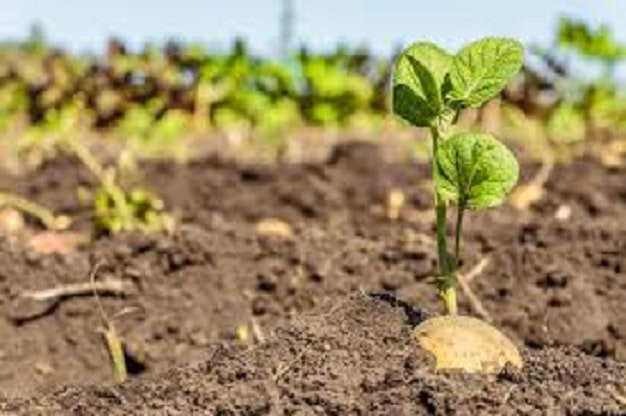

Umbi-umbian

1. Kentang
Kentang kerap dianggap sebagai umbi-umbian yang harus dihindari, terutama bagi mereka yang ingin mengonsumsi makanan rendah karbohidrat.
Meski demikian, makan kentang sebetulnya juga dapat menghadirkan berbagai manfaat bagi kesehatan karena ia juga mengandung serat, vitamin, mineral,
dan fitokimia.
Beberapa manfaat kentang bagi kesehatan, antara lain:
1. Menguatkan tulang, karena umbi-umbian ini kaya akan fosfor dan kalsium yang dapat mencegah terjadi pengeroposan tulang alias osteoporosis.
2. Menyehatkan jantung, karena kentang mengandung serat, potassium, vitamin C, dan vitamin B6 yang mendukung kerja jantung.
Untuk mendapatkan manfaat ini, hindari mengolah kentang dengan cara digoreng.